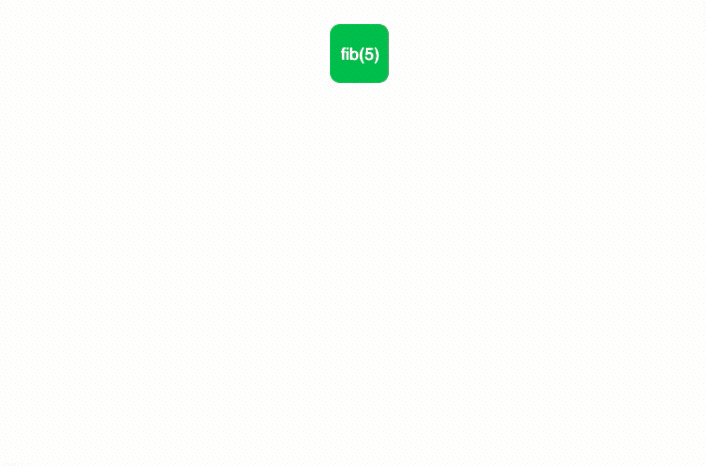

Overview
The Fibonacci numbers are the numbers in the following integer sequence.
0, 1, 1, 2, 3, 5, 8, 13, 21, 34, 55, 89, 144, ……..
In this sequence the nth term is the sum of (n-1)th and (n-2)th terms.

In dynamic programming the procedure is simple. It can store all Fibonacci numbers in a table, by using that table it can easily generate the next terms in this sequence.
Algorithm
// Fn = Fn-1 + Fn-2,
//where F0 = 0 and F1 = 1
Begin
define array named fibo of size n+2
fibo[0] := 0
fibo[1] := 1
for i := 2 to n, do
fibo[i] := fibo[i-1] + fibo[i-2]
done
return fibo[n]
End
Example Code
#include
using namespace std;
int genFibonacci(int n) {
int fibo[n+2]; //array to store fibonacci values
// 0th and 1st number of the series are 0 and 1
fibo[0] = 0;
fibo[1] = 1;
for (int i = 2; i <= n; i++) {
fibo[i] = fibo[i-1] + fibo[i-2]; //generate ith term using previous
two terms
}
return fibo[n];
}
int main () {
int n;
cout << "Enter number of terms: "; cin >>n;
cout << n << " th Fibonacci Terms: "<<genFibonacci(n)<<endl;
}
Output
Enter number of terms: 10
10th Fibonacci Terms: 55
Time Complexity
- O(n).
Space Complexity
- O(n).